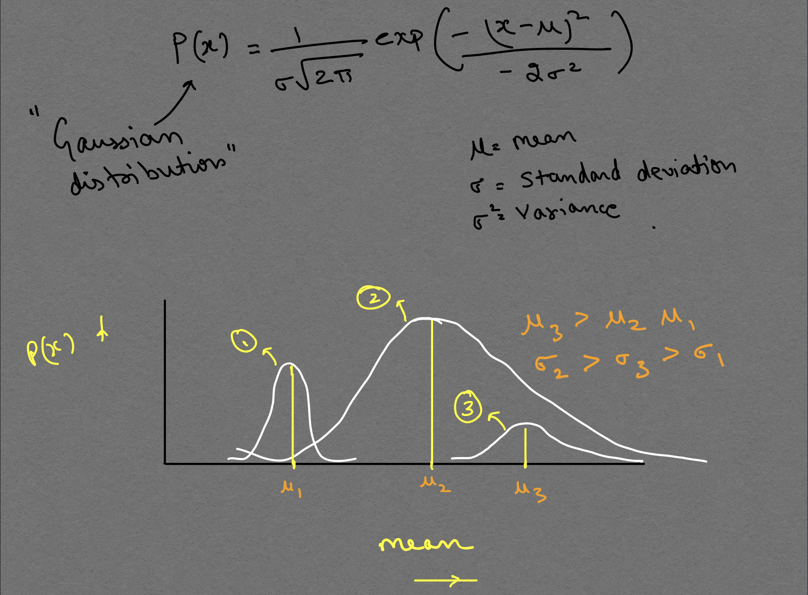
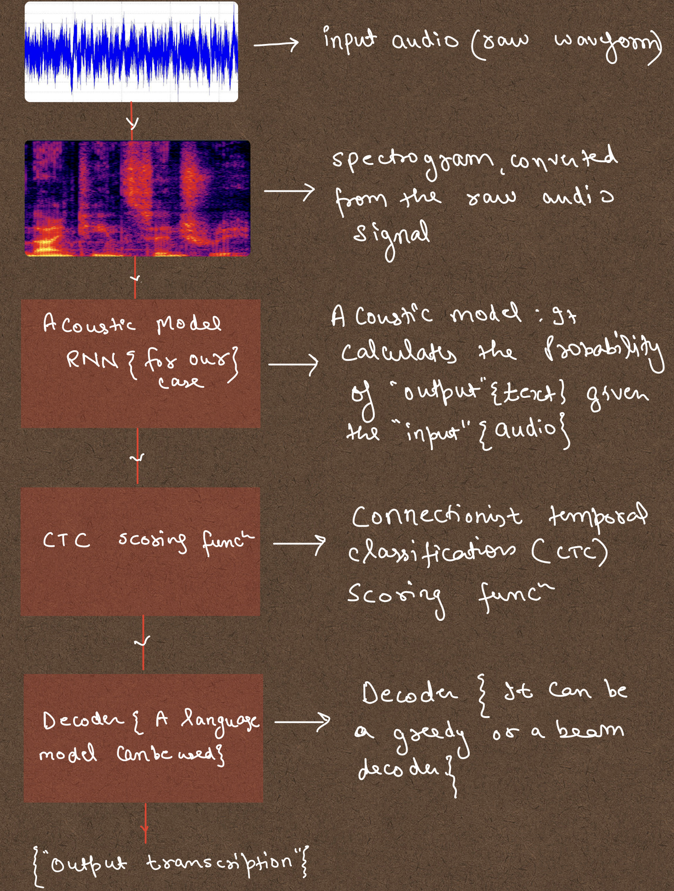
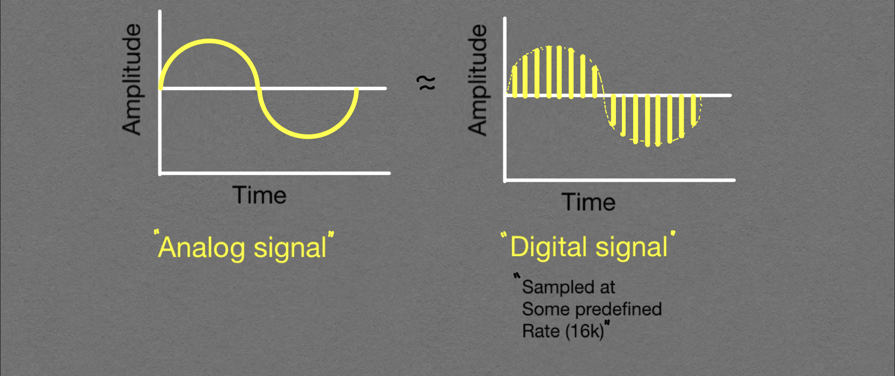

layout: post title: Automatic Speech Recognition(ASR)
The whole pipeline to convert speech to text is known as Automatic Speech Recognition (ASR), which formes the basis for Google's voice assistant sysytems. Let's dive deep into, how to build a basic one.
In this article, you'll learn about the intuition behind the ASR. The article is divided into the following sections:
Speech Recognition is a sequence labelling task, compared to image labelling where samples are independent. The fundamental equation of speech is \(P(w/o)\) i.e. for given observations O = [o1,o2,.....,on], we seek the most likley word sequence W = [w1,w2,.....,wn] \[W = argmax (P(W / O)\]
Like so many other tasks, Bayes theorem comes to our rescue. According to bayes theorem, \(P(\frac{W}{O})\) can be written as: \[P(\frac{W}{O}) = \frac{P(\frac{O}{W}) p(W)}{P(O)},\]
\(P(O)\) is a marginalizing term or a constant for a particular given data. Therfore, \[P(\frac{W}{O}) \approx P(\frac{O}{W}) p(W).\]

Word error rate (WER), Character error rate (CER) and Sentence error rate (SER) are some of the metrices to Measure the performance of ASR system.
WER: It's computed using "String edit distance" or "Levenstein distance." It is,
\[WER = \frac{Nsub + Nins + Ndel}{Nref}\]. Where,
\begin{equation} WER = \dfrac{N_s + N_i + N_d}{N_r} \end{equation}
i.e. the no of substitutions, insertions and deletions of WORDS needed to get from the reference to hypothesis (ASR system best guess of the transcript).
CER: Everythinng is same, except instead of WORDS it considers CHARACTERS for all the calcualtions in the above formula after removing all the spaces in the sentence.
SER: It's very simple to calculate. according tothe SER defination, even if a single word in a sentence is incorrect it wil label it as incorrect hypothesis. SER is used as proportion of incorect sentences to the total number of sentences. For example, if half of teh predicted sentences are incorrect, then the SER will be 50\%.
ASR Pipeline contains mainly 2 main components:
The acoustic model is responsible for calculating the \(P(O / W) \) and the LM calculates the \(P(W) \). Language model plays an important role, when there is ambguity in the predicted text. for example, I __ you, if
you have to choose between NO and KNOW which one whould you choose? Of course the second one, but why ? I would say, you have language understanding as one of your cognitive skills,that's how
you did it. Therefore, LM helps in making sense for a given word sequence.
let's look at a diagram of the whole pipeline, as shown in Fig. 2:

Input is a raw Audio signal/waveform, which is just the pressure waves recorded/stored digitally at a certain interval of time, also called a sampling rate/frequency as can be seen in Fig. 3. To store an audio digitally, we sample it at some predefined sampling rate and a certain bit depth (8 or 16). The right fig shows a digital signal and left fig shows an analog signal.

Just for the information, humans can hear sounds at frequencies from about 20 Hz to 20,000 Hz, though we hear sounds best from 1,000 Hz to 5,000 Hz, where human speech is centered.
It's a better representation of an Audio signal to fed a Neural Network. It combines both time and frequency information. There is a saying in Machine learning communty: Good Features make problems TRIVIAL.
Acoustic models calculates/determines the Likelihood of output(Y) conditioned on the given parameters {\(\theta\)}. It is a specific PDF which could have most likley produced the data. {\(\theta\)} is the learnable parameter.
we use gradient descent to learn the parameters by backproping the error(WER) for each set of data.
The input is either Raw audio or spectrogram and the output is the predicted transcription.For each input Acoustic model ouputs Likelihood of a
set of Word sequences i.e. \(L(Y/X;\theta)\)
ctc is a scoring function to calculate the loss of an continous ouput without any Alignment information given. It takes into account all the possible alignments possible for a given output sentence using a Heuristic approach. A very informative blog on ctc is written by Awni Hannun.
Decoder plays an important role in the ASR pipeline. It helps in getting a word error rate (WER) from 30-40 to under 15 or in some domain specific cases upto under 10 percent (%). The decoding process is of two types:
There are Two ways to handle out of vocabulary(OOV) words:
If I have left someone, please let me know. I willadd the same to the refrence.